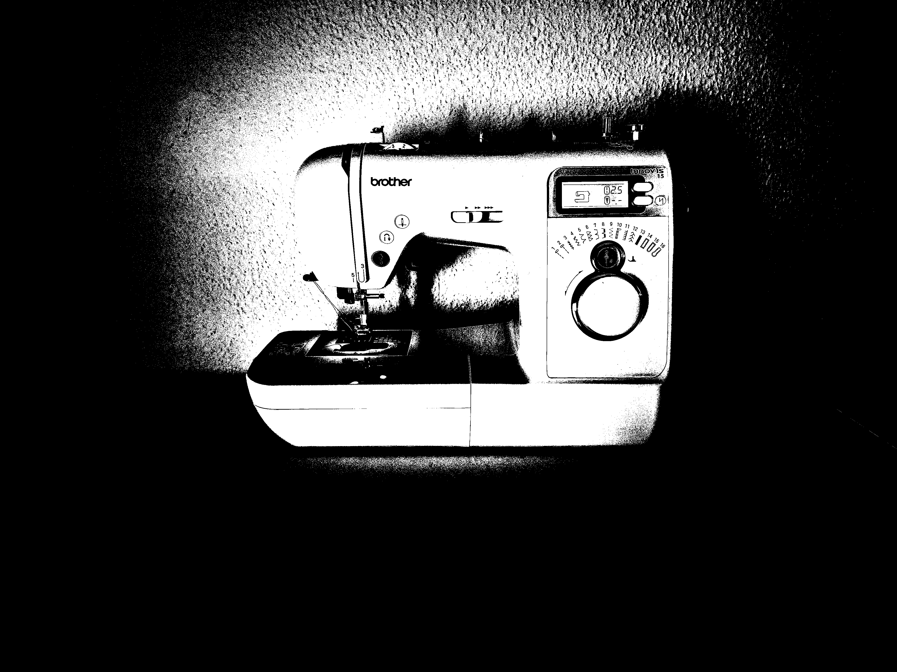

C'était un matin venteux dans la vieille ville de Berne, lorsqu'un petit bouton pendait doucement au manteau de sa propriétaire. Ensemble, ils quittèrent la maison. Le bouton tenait encore – pour l'instant.


Il petit bouton tomba du manteau de sa propriétaire -Plop!


Il atterrit dans une flaque et,
poussé par un passant.


Il roula sur les pavés humides, passant devant la Zytglogge, le Palais fédéral et la cathédrale.


En dévalant une petite marche, il attira l’attention d’un chat curieux, qui le transporta quelques pas avant de le laisser tomber sur une place élevée.


Là, le bouton contempla la ville
et savoura un instant de calme.


